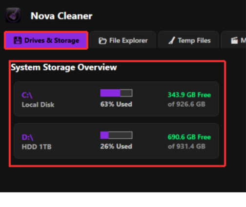
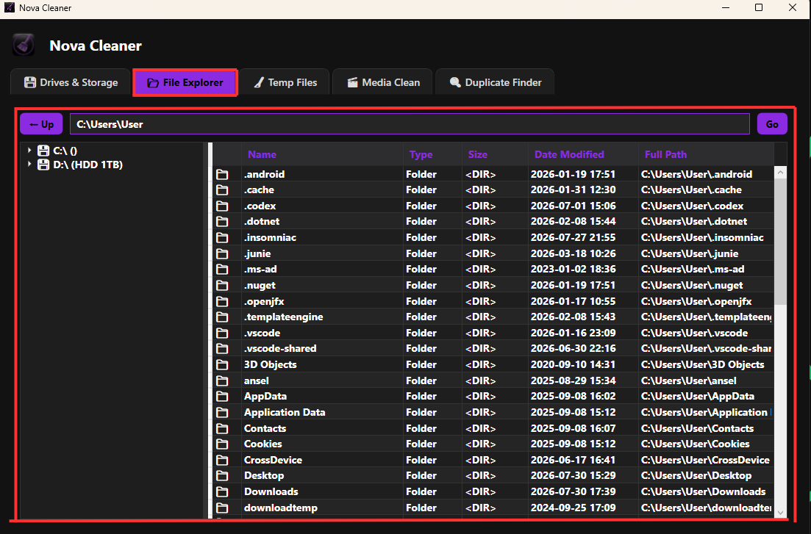
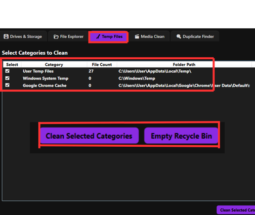
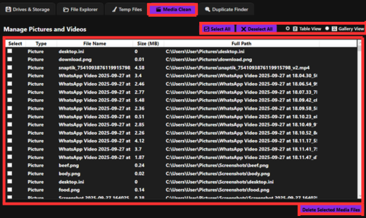
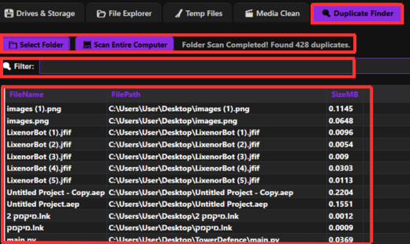

1. Driver Management
Drivers & Storage Tab: The NovaCleaner scan displays all your system drivers, showing their percentage of usage, free space available on each drive, and total storage capacity.

2. File Explorer
File Explorer Tab shows your complete drive storage and displays the exact path of any folder or file, allowing you to easily copy and paste file paths, while the up button takes you one step back to the previous folder you visited.

3. Trash Files
Temp Files Tab shows your temporary files and the Clean Selected Categories option lets you delete those unnecessary temporary files, while the Empty Recycle Bin button completely clears everything currently in your recycle bin.

4. Media Management Tab
Media Management Tab allows you to control all your PC media in one place, enabling you to select files and delete them using the Delete Selected Media Files button, while the Select All and Deselect All buttons quickly manage your selections, and the Table View button displays only the file names for selection, whereas the Gallery View shows your media with images for visual selection.

5. Duplicate Files Scanner
Duplicate Finder Tab features a Scan Entire Computer button that scans your entire system for duplicate files, a Select Folder button that lets you target specific folders for duplication checks, a filter bar functioning as a search bar to easily find files by name after the scan, and a convenient right-click delete option to remove any unwanted file.